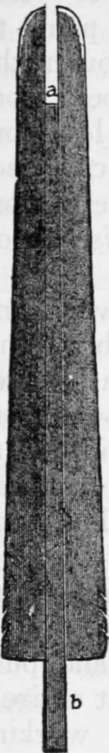

Trophies. Pelts, Buckskin And Rawhide. Part 3
Description
This section is from the book "Camping And Woodcraft", by Horace Kephart. Also available from Amazon: Camping and Woodcraft.
Trophies. Pelts, Buckskin And Rawhide. Part 3
In skinning a small animal "cased" it may be convenient to hang it up by the hind legs on a wooden gambrel thrust through the heel tendons, or on wire gambrel hooks, suspended by a short cord so that both hands can be used and the animal turned freely; but this is not necessary: if the beast is large, as a wolf or lynx, lay it on its back; if small, hold it on your knees.
Beginning at a hind foot, slit the skin along back of leg to base of tail, cutting carefully around the vent; then similarly along the other leg. If the feet are furred, skin them out with nails attached; if not, run the knife around the ankles. Peel the skin from the hind legs.
Tails of muskrat, beaver, and oppossum, being-worthless, are chopped off where the fur ends, before skinning; those of other fur bearers are left on, the bone being completely removed, of course, or the tail would spoil. Cut a green stick about an inch thick and seven or eight inches long. Split it about half its length, work the skin loose from root of tail with finger and thumb until you can slip the split stick over the bone, then, pressing the sides of stick firmly so that the edges cannot slip over the skin, pull hard with it toward end of tail while your other hand pulls the body in the opposite direction, thus stripping the tail skin off "as dick as a whistle".
Make a small incision through tip of tail, and. before putting the pelt on a stretcher, run a switch through the tail sheath to open it up and allow the air to pass through it. If the tail sheath were left stuck together it would not cure properly and the fur would slip. This is the best way with mink and other animals that have tails more or less rat-like, and trappers generally practice it even on fox, raccoon, skunk, etc.; but if the animal has a thick, fleshy tail, the skin should rather be slit its entire length, on the under side, and spread flat for curing.
Next strip the skin down over the body. The front legs are easily worked out with the fingers. Sever the feet at the ankles, or skin them out with toes attached, as the case may require. Such skins as mink, marten, fisher, and fox may be slit up the back of the front legs to assure proper drying.
Peel the skin down over the head, using the knife gently. The ears are cut off not too close to the skull, the membranes cut through at the eyes, and the muzzle skinned off with lips and bare nose attached. The cartilage need not be removed, since the animal is not to be mounted.
Now go over the flesh side of the whole pelt and remove all adhering flesh and fat with the knife, but do not scrape thin at any place. Raccoon, skunk, and oppossum skins are fatty, like a bear's, and should be fleshed with particular care.
If the fur is dirty, or has blood spots on it, you must clean it with water and a rag (soap, too, if need be). A wet pelt should be dried by swinging it around in the air, before putting it on the stretcher.
As furs are of no value until freezing weather sets in, there is no need to salt the skins or use any other preservative; just dry them in the shade on stretchers.
Pelts of skunk, mink, etc., can be deodorized most effectively by soaking and washing them in gasoline 01 benzine (away from a fire, of course) ; then wring out, and hang up in a current of air to dry, before stretching.
A "cased" skin is dried by slipping it over a thin beard of proper shape and size so it is stretched tight like a drumhead. Stretchers are of various patterns. For muskrat the stretcher need be no more than a box board about 20 inches long, 5 or 6 inches wide at the base, and 4 or 5 inches at the shoulder, from which it is rounded off to the upper end. Dimensions depend, of course, on the size of the skin. The sides are chamfered so as to be thin along the edges, which are rounded.
To get the approximate size and shape for a stretcher, lay the animal on its back, on a board, and mark around it near the end of the fur. A fox skin will require a 1/2-inch board; otter, 3/4-inch, and long enough so its tail can be spread out flat and tacked at full length. Slip the skin over the stretcher, fur side in, back on one side and belly on the other, and tack at the hind feet, or fasten to notches cut in edge of board. Then push in on each side a thin, narrow strip, or a stick to stretch the skin outward and let air get in. A few tacks at the base will complete the stretching. Then hang in some cool, dry, airy place until dry.
Another form of stretcher is shown in Fig. 184. The board is shaped as above, then a tapered piece is ripped from the center (ab), which, after the skin has been slipped on, is pushed forward like a wedge to stretch taut.
Bird Skins
A sportsman may wish to save the skin of a particularly fine bird for mounting, and this can be done, in cool weather, without any preservatives or taxidermist's equipment at all. You are likely to have some absorbent cotton or gauze in your first-aid kit. With this, plug the bird's throat, nostrils, and vent, and wipe off any blood that may have escaped from shot holes. The feathers must be disarranged as little as possible, and must be kept clean.
Fig. 184. Pelt stretcher (a, b, wedge).
Lay the bird on its back, head to one side, and bend the wings backward out of the way. Part the feathers from point of breastbone to vent, and make an incision straight from one point to the other, being careful not to cut through the abdominal wall. Lift edge of skin and peel from body until thigh joint is exposed. Sever leg from body. Work thigh gradually out of skin, cut tendons free just above knee, and strip all flesh from bone. Do the same with the other leg. Use cotton or corn meal if blood or juice starts.
Set bird on end, tail up. Bend tail backward, and cut through vent lining, tail muscles, and backbone, being careful not to cut butts of tail feathers, or through skin of back. Work the skin loose from back, sides, and breast, to the wings, turning it inside out as you go. If the bird is large, you can work better if you hang it up by a wire hook and cord, thrusting the hook into pelvis.
Continue to:
- prev: Trophies. Pelts, Buckskin And Rawhide. Part 2
- Table of Contents
- next: Trophies. Pelts, Buckskin And Rawhide. Part 4